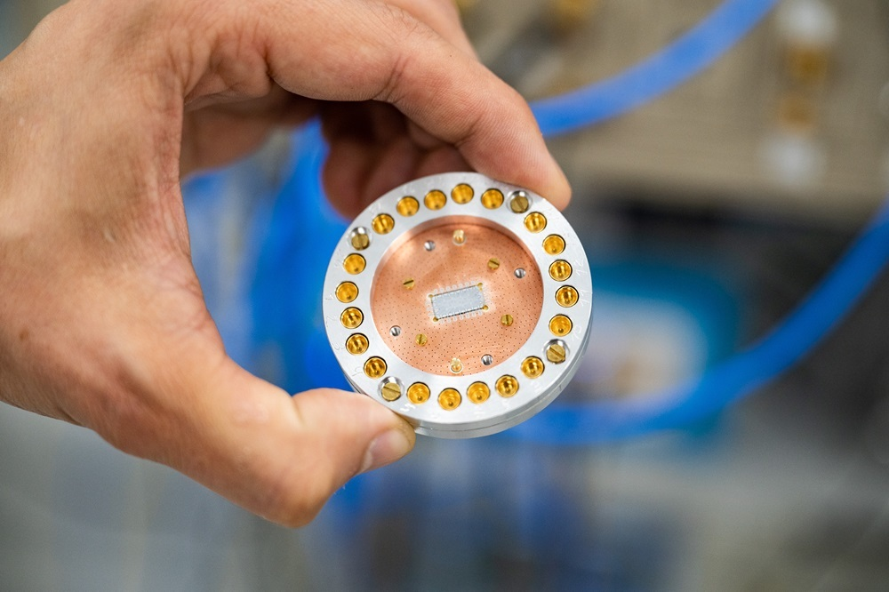
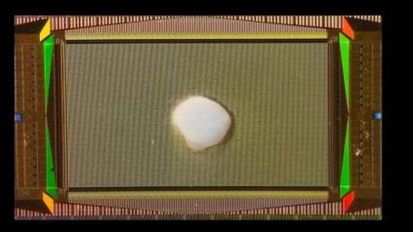

Здесь вы найдете самые свежие новости и продукты в сфере компьютерных технологий.
Первый в России эксперимент с 8-кубитным квантовым процессором.

В Университете МИСИС впервые в России успешно проведен эксперимент с 8-кубитным квантовым процессором.
Разработанный коллективом НИТУ МИСИС совместно с Российским квантовым центром и МФТИ, процессор прошел тестирование в лаборатории сверхпроводниковых квантовых технологий. Точность выполнения двухкубитных операций в эксперименте превышает 95%. © 2006-2023 Habr
Читать далее >>
Искусственный мозг подключили к компьютеру.

Американские исследователи вырастили так называемый органоид мозга на высокоплотном массиве электродов. Такая колония клеток повторяет структуру нейронов в человеческом мозге, при этом ее фактически встроили в компьютерный интерфейс. © 2006-2023 Habr
Читать далее >>
Kwumsy K3: механическая клавиатура со встроенным дисплеем.
Гибридный девайс для разных задач.
Kwumsy K3 - это механика, которая поставляется с портативным дисплеем. На первый (да и второй тоже) взгляд это устройство кажется странным девайсом, но если подумать, то она может оказаться полезной многим из нас. © 2006-2023 Habr
Читать далее >>